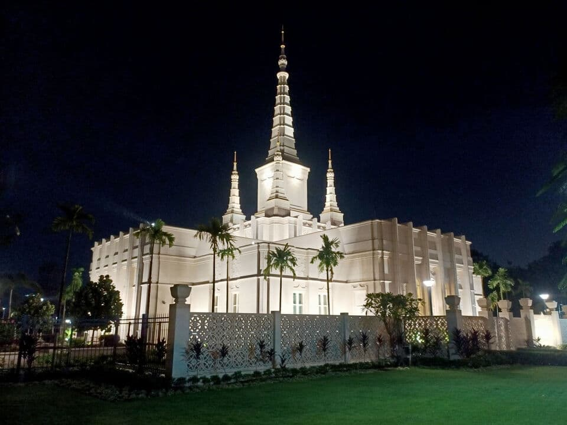

Temple Album
Home
Old
New
Large
Small
Home
Salta Argentina Temple
San Diego California Temple
Tokyo Japan Temple
Washington D.C. Temple
Córdoba, Argentina Temple
Rome Italy Temple
Hartford Connecticut Temple
Buenos Aires Argentina Temple

Phnom Penh Cambodia Temple